2026 ACC/AHA Guideline on the Management of Dyslipidemia (2026 年 ACC/AHA 高血脂診療指引)
1. Introduction
- 無建議內容
2. Definitions and Classifications
- 無建議內容
3. Evaluation and Diagnosis
3.1. Screening in Children and Adults
| COR | LOE | 建議 |
|---|---|---|
| 1 | B-NR | 建議成人從 19 歲開始進行 lipid profile 篩檢，之後至少每 5 年進行一次，以識別可治療的 ASCVD risk；對於具有額外 ASCVD risk factors 的個體，則建議進行更頻繁的篩檢。 |
| 1 | B-NR | 對於先前未檢測過的 9 至 11 歲兒童，建議進行 lipid profile 篩檢，以識別 familial hypercholesterolemia (FH) 和其他重大的 lipid disorders。 |
| 2a | B-NR | 對於擁有一等親或二等親患有 premature ASCVD、嚴重的 hypercholesterolemia 或 FH 的個體，從 ≥2 歲開始進行單次的 lipid profile 篩檢（例如 cascade screening）以識別 FH 是合理的。 |
3.2. Measurement of TC, LDL-C, HDL-C, TG, and Non–HDL-C
| COR | LOE | 建議 |
|---|---|---|
| 1 | B-NR | 在成人與兒童中，建議進行標準的 nonfasting 或 fasting lipid profile，以記錄基線 lipid levels、估算 ASCVD risk，並作為啟動 LLT 的指引。 |
| 1 | B-NR | 若成人與兒童有 dyslipidemia 或 premature ASCVD 家族史、已知或懷疑有 TG metabolism 異常，或其 nonfasting lipid profile 顯示 TG level ≥400 mg/dL (≥4.5 mmol/L)，應進行 fasting lipid profile 以更準確地估算 LDL-C level。 |
| 1 | B-NR | 進行過標準 lipid profile 的成人與兒童，建議優先使用 Martin/Hopkins equation 或 Sampson/National Institutes of Health (NIH) equation，而非使用 Friedewald equation 來估算 LDL-C。 |
| 1 | B-NR | 進行過標準 lipid profile 的成人與兒童，建議優先使用 Martin/Hopkins equation 或 Sampson/NIH equation，而非直接進行 LDL-C 測量（beta-quantification 除外）來估算 LDL-C。 |
| 1 | B-NR | 進行過標準 lipid profile 的成人與兒童，建議報告 non–HDL-C，以進行 ASCVD risk 評估並作為啟動和監測 LLT 的指引。 |
| 3: No Benefit | B-NR | 在成人與兒童中，不建議常規進行 advanced lipoprotein testing（例如：gradient gel electrophoresis、density gradient ultracentrifugation、nuclear magnetic resonance spectroscopy、ion mobility analysis）來評估 lipoprotein subclasses 及參數（如 LDL particle size）以估算 ASCVD risk 並作為啟動 LLT 的指引。 |
3.3. Measurement of ApoB
| COR | LOE | 建議 |
|---|---|---|
| 2a | B-NR | 在接受 LLT 的成人中，特別是那些患有 ASCVD、CKM syndrome、type 2 diabetes 和/或 elevated TG 的個體，一旦達到 LDL-C 和/或 non–HDL-C 目標，測量 apoB 來指引進一步強化治療的決策是合理的。 |
| 2b | B-NR | 在未接受 LLT 的成人中，測量 apoB 以增強 ASCVD risk 評估、指引啟動 LLT 的決策以及定性 inherited lipid disorders 可能是合理的。 |
3.4. Measurement of Lp(a)
| COR | LOE | 建議 |
|---|---|---|
| 1 | B-NR | 對於所有成人，建議至少測量一次 Lp(a) 濃度以進行 ASCVD risk 評估。 |
| 1 | B-NR | 在患有 FH、premature ASCVD 或 high Lp(a) 的個體中，建議對一等親家屬進行 high Lp(a) 濃度的 cascade testing，以識別 ASCVD risk 增加的個體。 |
| 1 | B-NR | 針對測量 Lp(a) 的個體，建議使用對 apolipoprotein(a) (apo(a)) isoforms 不敏感且可追溯至官方 reference standard materials 的檢驗室進行檢驗，以更準確地測量 Lp(a) 並定性 ASCVD risk。 |
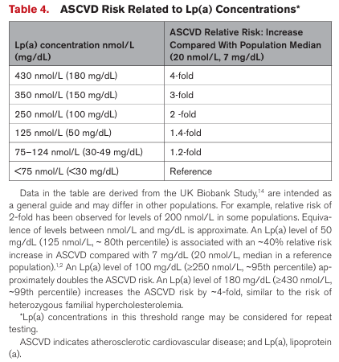
3.5. Monitoring and Follow-Up
| COR | LOE | 建議 |
|---|---|---|
| 1 | A | 對於接受 LLT 的個體，臨床醫師應在開始治療或劑量調整後 4 至 12 週進行 lipid profile 檢查，之後每 6 至 12 個月檢查一次，以評估 LLTs 的療效與依從性。 |
4. Management
4.1. Lifestyle Management
- 4.1.1. Primordial Prevention of Dyslipidemia: Childhood Through Adulthood
| COR | LOE | 建議 |
|---|---|---|
| 1 | A | 在兒童與健康成人中，應終身提倡和強化健康的飲食型態、規律的 體能活動、維持健康體重、健康的睡眠、壓力管理以及避免使用菸草產品，以降低 dyslipidemia 和 ASCVD 的風險。 |
- 4.1.2. Dietary Approaches in Dyslipidemia
| COR | LOE | 建議 |
|---|---|---|
| 1 | B-R | 建議患有或未患有 ASCVD 的成人與兒童，採用強調攝取水果、蔬菜、堅果、豆類、全穀物和纖維的飲食，同時以膳食中的 monounsaturated 和 polyunsaturated fats 取代 saturated 和 trans fats，以降低 LDL-C 數值並減少 ASCVD risk |
| 1 | A | 對於 fasting TG level 介於 150 至 499 mg/dL (1.7–5.6 mmol/L) 的成人，低添加糖、精製碳水化合物與 saturated fat，並盡量減少酒精攝取的飲食，有助於降低 TG 和 ASCVD risk。 |
| 1 | B-NR | 對於 fasting TG level 介於 500 至 999 mg/dL (5.7–11.3 mmol/L) 的成人，低添加糖、精製碳水化合物與 saturated fat、不飲酒，且根據個人情況限制總脂肪的飲食，有助於降低 TG，進而降低 ASCVD risk 和 pancreatitis 的風險。 |
| 1 | B-NR | 對於 fasting TG level ≥1000 mg/dL (11.3 mmol/L) 的成人，極低總脂肪和精製碳水化合物，並完全排除酒精和添加糖的飲食，有助於降低 TG 和 pancreatitis 風險。 |
| 1 | B-NR | 對於 fasting TG level ≥150 mg/dL (1.7 mmol/L) 或 nonfasting TG level ≥175 mg/dL (2 mmol/L) 的成人，改善與 overweight/obesity 及 CKM syndrome 相關的生活型態因素，減輕 5% 至 10% 的體重，每週進行 ≥150 分鐘中等至高強度的 physical activity，以及每週 2 天進行上下半身 resistance exercise，有助於降低 TG |
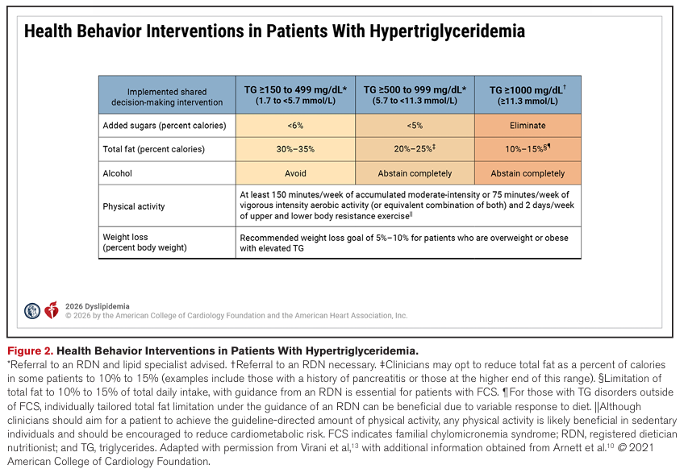
- 4.1.3. Attainment and Maintenance of Healthy Weight in People With Dyslipidemia
| COR | LOE | 建議 |
|---|---|---|
| 1 | B-NR | 在有 overweight 或 obesity 且伴隨 dyslipidemia 的個體中，建議進行諮詢和治療，以達到 weight reduction 及維持 healthy weight 的目標，從而改善 dyslipidemia。 |
- 4.1.4. Physical Activity
| COR | LOE | 建議 |
|---|---|---|
| 1 | B-R | 在有 dyslipidemia 的個體中，建議將規律的 physical activity（包括每週 ≥150 分鐘的中等至高強度 aerobic exercise，以及每週 2 天的上下半身 resistance exercise）納入計畫以改善血脂和心血管健康 |
- 4.1.5. Dietary Supplements
| COR | LOE | 建議 |
|---|---|---|
| 3: No Benefit | B-R | 在有 dyslipidemia 的個體中，由於在 lipid-lowering 和降低 ASCVD risk 的益處資料有限且不一致，因此不建議使用 dietary supplements 來降低 LDL-C 或 TG |
- 4.1.6. When to Refer to a Registered Dietitian Nutritionist
| COR | LOE | 建議 |
|---|---|---|
| 1 | B-NR | 在 fasting TG ≥1000 mg/dL (11.3 mmol/L) 的個體中，建議轉介至 RDN 以建立個人化的治療計畫，旨在降低 TG 和 pancreatitis 的風險。 |
| 2a | B-NR | 在 fasting TG 介於 150 至 999 mg/dL (≥1.7–11.3 mmol/L) 且具備 CKM syndrome 特徵的個體中，轉介給 RDN 進行 evidence-based dietary patterns 的諮詢，對於改善 lipoprotein levels 和降低 pancreatitis 風險是有益的 |
4.2. Medical Management
- 4.2.1. Pharmacological Therapy
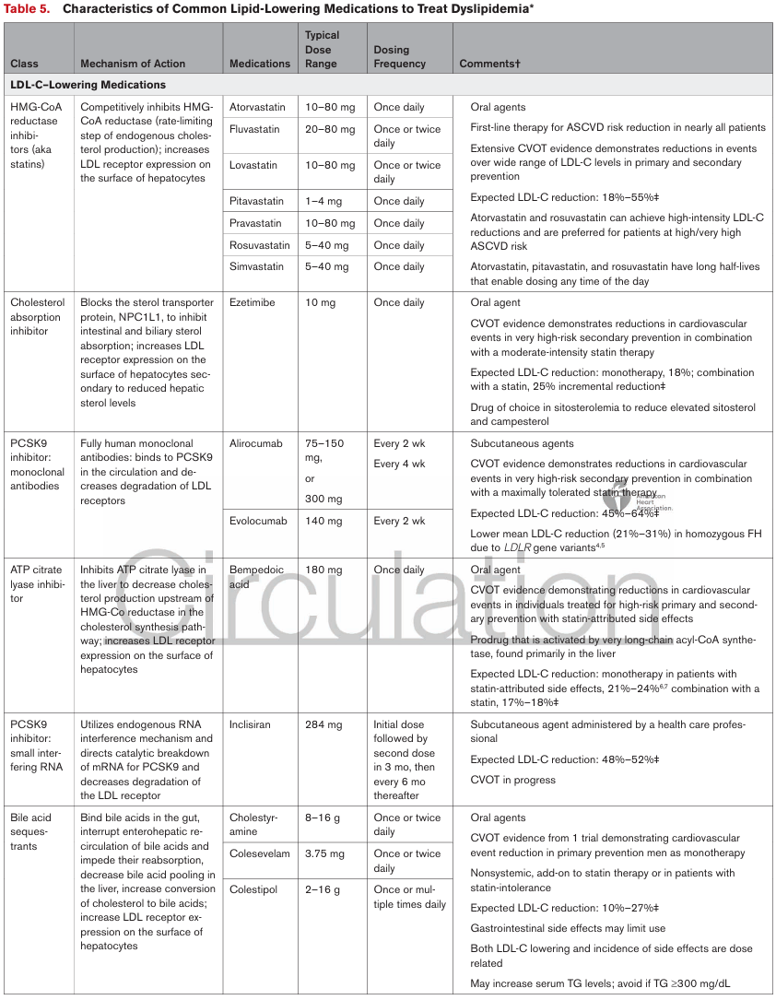
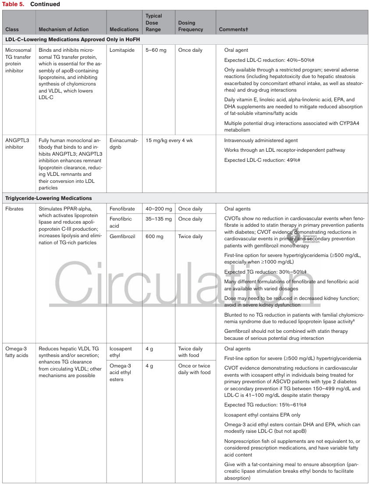
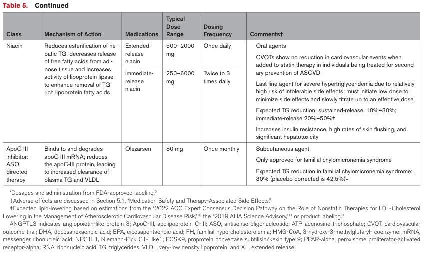
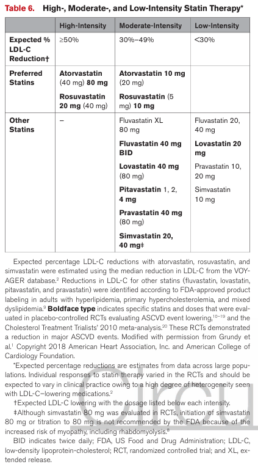
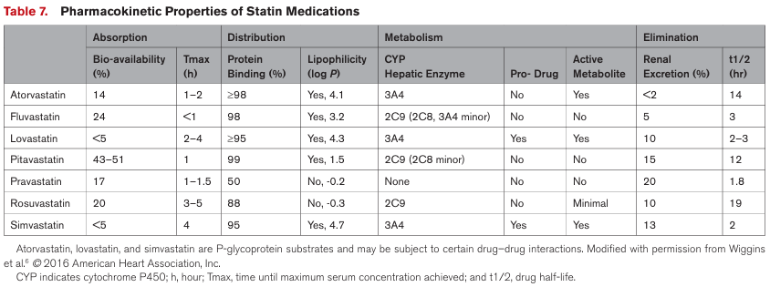
- 4.2.2. Referring to a Clinical Lipid Specialist
- 4.2.3. Primary Prevention in Adults
- 4.2.3.1. 個人化 Benefit-Risk 討論的角色
| COR | LOE | 建議 |
|---|---|---|
| 1 | B-NR | 在有 dyslipidemia 的個體中，臨床醫師與患者應共同討論患者的 ASCVD risk、作為降低風險基礎的 healthy lifestyle、LLT 預期帶來的風險降低益處、可能的潛在危害和 DDI、成本以及患者偏好，以制定個人化的治療決策，和/或考慮其他的評估選項以輔助決策。 |
- 4.2.3.2. PREVENT-ASCVD Equations
| COR | LOE | 建議 |
|---|---|---|
| 1 | B-NR | 在年齡 30 至 79 歲且無 ASCVD 或 subclinical atherosclerosis，並具有介於 70 至 189 mg/dL (1.8–4.9 mmol/L) 的 LDL-C level 的成人中，應使用 PREVENT-ASCVD equations 來估算 10-y ASCVD risk，並將其分類為 low (<3%)、borderline (3% to <5%)、intermediate (5% to <10%) 或 high (≥10%) 10-y estimated ASCVD risk。 |
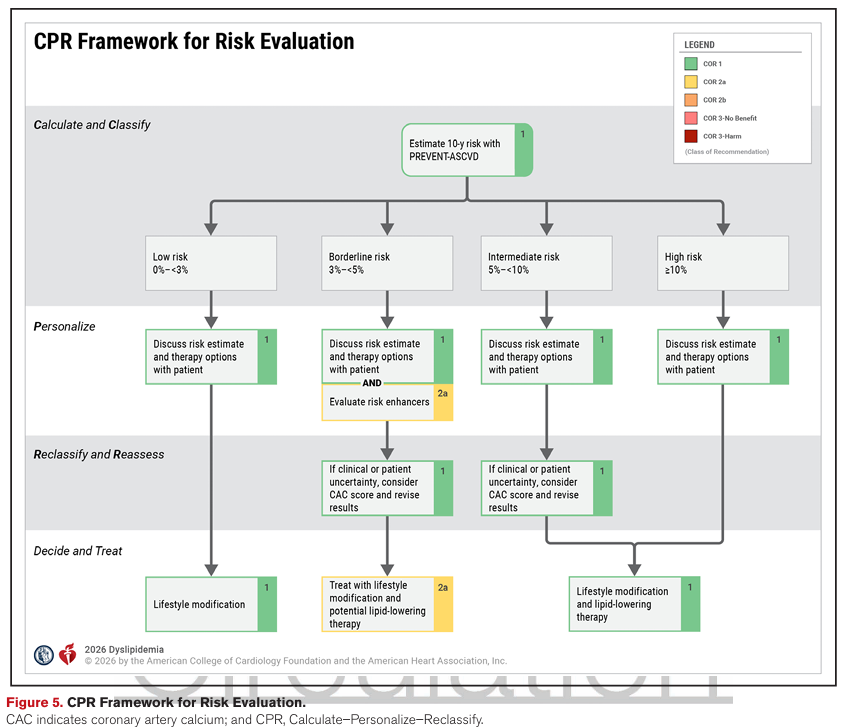
- 4.2.3.3. 風險增強因子 (Risk Enhancers)
| COR | LOE | 建議 |
|---|---|---|
| 2a | B-NR | 在無 ASCVD 且依 PREVENT-ASCVD equations 估算 10-y ASCVD risk 為 borderline (3% to <5%) 的成人中，考量 risk enhancers 藉以個人化風險評估，並評估啟動 LLT 作為 lifestyle management 輔助療法對降低 ASCVD risk 的潛在益處，是合理的。 |
| 2a | B-R | 在無 ASCVD 且依 PREVENT-ASCVD equations 估算 10-y ASCVD risk 為 borderline (3% to <5%) 的成人中，若測量了 high-sensitivity C-reactive protein (hsCRP) 且連續 2 次 ≥2 mg/L 且無可識別的 hsCRP 升高潛在原因，high-intensity statin therapy 對於降低 ASCVD 事件的風險是有效的。 |
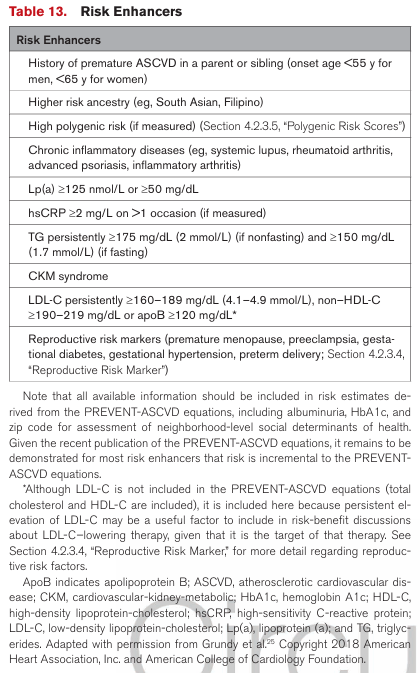
- 4.2.3.4. 生殖風險標記 (Reproductive Risk Markers)
| COR | LOE | 建議 |
|---|---|---|
| 2a | B-NR | 在無 ASCVD 的成人中，當考慮啟動 LLT 作為 lifestyle management 輔助以進行 primary ASCVD prevention 時，考量 reproductive risk markers（如 early menopause <45 歲、不良妊娠結果病史：gestational hypertension、preeclampsia、gestational diabetes、preterm delivery）以進行個人化的 ASCVD risk 評估，是合理的。 |
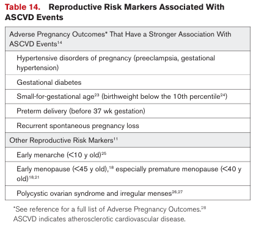
-
4.2.3.5. Polygenic Risk Scores 多基因風險分數
- 無建議內容
-
4.2.3.6. Subclinical Atherosclerosis 的選擇性影像學檢查 (男性 ≥40 歲或女性 ≥45 歲)
| COR | LOE | 建議 |
|---|---|---|
| 1 | B-R | 在處於 intermediate risk 與特定處於 borderline risk 且無過往 ASCVD 的成人中，如果對 LLT 的決策仍不確定，應使用 CAC score 進行進一步的 risk stratification，並指引是否暫緩、延遲或啟動治療。 |
| 2a | B-NR | 在處於 intermediate risk 或特定處於 borderline risk 並接受 CAC 檢測的成人中，若 CAC score 為 0 Agatston units (AU)，且偏好避免 LLT 並專注於 lifestyle management，且沒有更高風險狀況（如 FH 或 severe hypercholesterolemia >190 mg/dL、diabetes 且年齡 >40 歲、目前吸菸、強烈的 premature ASCVD 家族史），延緩治療並在 3 至 7 年後重複進行 CAC testing 以提供個人化管理，是合理的。 |
| 1 | B-NR | 在處於 intermediate risk 與特定處於 borderline risk 的成人中，若 CAC score >0 AU，建議啟動 LLT，特別是當 CAC score ≥100 AU 或 ≥ 第 75 標準百分位數 (75th standardized percentile) 時，以降低 ASCVD risk。 |
| 2a | B-NR | 在處於 intermediate 或 high risk 且無過往 ASCVD 的成人中，若對 LLT 的強度不確定，CAC score 可有效精煉治療目標並決定是否強化 LLT。 |
| 1 | B-NR | 在無過往 ASCVD 的成人中，若在 noncardiac computed tomography (CT) scans 中偶然發現 CAC（例如透過視覺估計或經過驗證的人工智慧演算法），在做啟動或強化 LLT 的決策以降低 ASCVD risk 時，應將 coronary atherosclerosis 的存在納入考量。 |
| 2b | B-NR | 在無過往 ASCVD 且可能具有高負擔的 noncalcified plaque（例如：發炎性疾病、HIV 感染者與 diabetes）的成人中，選擇性使用 coronary computed tomography angiography (CCTA) 對於提供風險評估資訊與引導 LLT 治療強度的決策，可能是有效的。 |
- 4.2.3.7. 30 至 79 歲 LDL-C Levels 70 至 189 mg/dL (1.8-4.9 mmol/L) 成人的 Primary Prevention
| COR | LOE | 建議 |
|---|---|---|
| 1 | A | 針對正在評估 ASCVD primary prevention 的成人，除了考慮 LLT 的 benefit-risk discussion 外，還應提供健康行為的建議。 |
| 1 | A | 在年齡 30 至 59 歲、10-y estimated risk 為 low (<3%)，且 LDL-C <160 mg/dL (4.1 mmol/L) 及 30-y risk estimate <10% 的成人中，建議提供健康行為諮詢，以降低 LDL-C 及 ASCVD risk。 |
| 2a | C-LD | 在年齡 30 至 59 歲、10-y estimated risk 為 low (<3%)，但 LDL-C 為 160 至 189 mg/dL (4.1–4.9 mmol/L) 或是 30-y ASCVD risk ≥10%（適用於 30-59 歲）的成人中，使用 moderate-intensity statin 來降低致粥狀硬化性 lipoproteins 的累積暴露是合理的。 |
| 2a | A | 在 10-y estimated risk 為 borderline (3% to <5%) 且決定啟動 statin therapy 進行 primary prevention 的成人中，使用 moderate-intensity statin 達到 ≥30% 至 49% 的 LDL-C 降幅並降低 ASCVD risk 是合理的。 |
| 1 | A | 在 10-y estimated risk 為 intermediate (5% to <10%) 的成人中，建議至少使用 moderate-intensity statin 以達到 ≥30% 至 49% 的 LDL-C 降幅並降低 ASCVD risk；對於處於此風險範圍高端的個體，使用 high-intensity statin 有助於進一步降低 LDL-C 達 ≥50% 並降低 ASCVD risk。 |
| 2a | B-NR | 在 10-y estimated risk 為 borderline (3% to <5%) 或 intermediate (5% to <10%) 並啟動 statin therapy 的成人中，治療至 LDL-C <100 mg/dL (2.6 mmol/L) 和 non–HDL-C <130 mg/dL (3.4 mmol/L) 的目標以降低 ASCVD risk 是合理的 。 |
| 1 | A | 在 10-y estimated risk 為 high (≥10%) 並啟動 LLT 進行 primary prevention 的成人中，建議使用 high-intensity statin therapy 達到 ≥50% 的 LDL-C 降幅以降低 ASCVD 的風險 。 |
| 2a | B-R | 在 10-y estimated risk 為 high (≥10%) 且決定啟動 statin therapy 的成人中，治療至 LDL-C <70 mg/dL (1.8 mmol/L) 和 non–HDL-C <100 mg/dL (2.6 mmol/L) 的目標以降低 ASCVD risk 是合理的 。 |
| 2a | B-R | 在 10-y estimated risk 為 high (≥10%) 且已使用 maximally tolerated statin 的成人中，若無法達到 LDL-C <70 mg/dL (1.8 mmol/L) 和 non–HDL-C <100 mg/dL (2.6 mmol/L) 的目標，加上 ezetimibe 是合理的 。 |
| 2b | B-NR | 在 10-y estimated risk 為 high (≥10%) 且已使用 maximally tolerated statin (含或不含 ezetimibe) 的成人中，若無法達到 LDL-C <70 mg/dL (1.8 mmol/L) 和 non–HDL-C <100 mg/dL (2.6 mmol/L) 的目標，加上 PCSK9 mAb 或 bempedoic acid 可能是合理的，藉以降低 LDL-C 及 ASCVD risk 。 |
| 2b | B-R | 在預期壽命 <1 年的個體中，停用為了 primary prevention 目的而處方的 LLT 可能是合理的，以避免不必要的藥物使用或不良藥物反應 。 |
| 3: No Benefit | B-NR | 在基線未治療的 LDL-C <70 mg/dL (1.8 mmol/L) 及 non–HDL-C <100 mg/dL (2.6 mmol/L) 且沒有額外 ASCVD risk factors 的成人中，為了 primary prevention 而啟動 LLT 不太可能降低 ASCVD risk 。 |
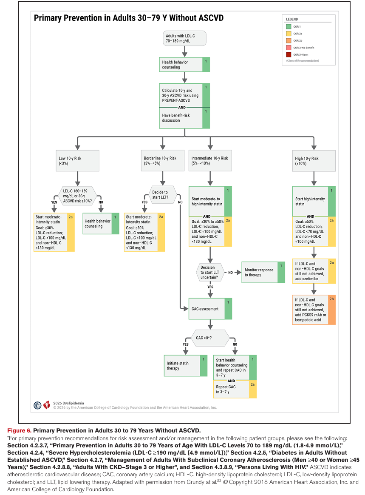
- 4.2.4. Severe Hypercholesterolemia (LDL-C ≥190 mg/dL [4.9 mmol/L])
- 4.2.4.1. 風險評估在 HeFH 中的角色
| COR | LOE | 建議 |
|---|---|---|
| 2b | B-NR | 在患有 HeFH 的成人中，FH-specific risk scores 在預測短期 ASCVD risk 上可能是有效的 。 |
| 3: Harm | C-EO | 在患有 HeFH 的個體中，不應使用為一般人群開發的標準風險評估工具來計算 10- 或 30-y ASCVD risk 。 |
- 4.2.4.2. FH 的基因檢測 (Genetic Testing)
| COR | LOE | 建議 |
|---|---|---|
| 1 | B-NR | 在可能、大概或確診為 FH 的成人中，針對 FH 致病性/可能致病性的罕見變異進行 panel-based genetic testing 是有益的，可藉此找出心血管事件風險最高的個體，並促進 cascade screening 。 |
| 2a | B-NR | 在 LDL-C ≥190 mg/dL (4.9 mmol/L) 的 severe hypercholesterolemia 且無明確 secondary cause 的成人中，針對 FH 進行 panel-based genetic testing，在識別有較高 ASCVD 事件風險的 FH 患者上是有效的 。 |
| 2b | B-NR | 在 elevated LDL-C 達 160 至 189 mg/dL (4.1–4.9 mmol/L) 且無明確 secondary cause 的成人中，考慮針對 FH 進行 panel-based genetic testing，以識別較高事件風險的 FH 個體可能是合理的 。 |
- 4.2.4.3. LDL-C ≥190 mg/dL (4.9 mmol/L) 的 Severe Hypercholesterolemia
| COR | LOE | 建議 |
|---|---|---|
| 1 | B-NR | 在 LDL-C ≥190 mg/dL (4.9 mmol/L) 的 severe hypercholesterolemia 成人中，應排除並處理 dyslipidemia 的 secondary causes 以降低 LDL-C 。 |
| 1 | B-R | 在 LDL-C ≥190 mg/dL (4.9 mmol/L) 的 severe hypercholesterolemia 成人中，建議使用 maximally tolerated statin therapy 來降低 LDL-C 並降低 ASCVD risk 。 |
| 1 | B-NR | 在具有 LDL-C ≥190 mg/dL (4.9 mmol/L) 的 severe hypercholesterolemia，無 clinical ASCVD、額外 ASCVD risk factors、HeFH 或 subclinical atherosclerosis 且已使用 maximally tolerated statin therapy 的成人中，建議加入 ezetimibe、PCSK9 mAb 和/或 bempedoic acid，以達到 LDL-C <100 mg/dL (2.6 mmol/L) 和 non–HDL-C <130 mg/dL (3.4 mmol/L) 的目標並降低 ASCVD risk 。 |
| 1 | B-R | 在 LDL-C ≥190 mg/dL (4.9 mmol/L) 的 severe hypercholesterolemia，無 clinical ASCVD 但臨床或基因確診為 HeFH、有額外 ASCVD risk factors 或已證實有 coronary calcification 且已使用 maximally tolerated statin therapy 的成人中，建議加入 ezetimibe、PCSK9 mAb 和/或 bempedoic acid 達到 LDL-C <70 mg/dL (1.8 mmol/L) 與 non–HDL-C <100 mg/dL (2.6 mmol/L) 的目標，以降低 LDL-C 和 ASCVD risk 。 |
| 1 | B-R | 在有 LDL-C ≥190 mg/dL (4.9 mmol/L) 的 severe hypercholesterolemia 與 clinical ASCVD 且已使用 maximally tolerated statin therapy 的成人中，建議加入 ezetimibe、PCSK9 mAb 和/或 bempedoic acid 達到 LDL-C <55 mg/dL (1.4 mmol/L) 與 non–HDL-C <85 mg/dL (2.2 mmol/L) 的目標，以降低 LDL-C 和 ASCVD risk 。 |
| 2a | B-R | 在有 severe hypercholesterolemia（無論有無 clinical ASCVD）且儘管使用了 maximally tolerated statin (含或不含 ezetimibe) LDL-C 仍 ≥100 mg/dL (2.6 mmol/L) 的成人中，使用 inclisiran 治療以降低 LDL-C 是合理的 。 |
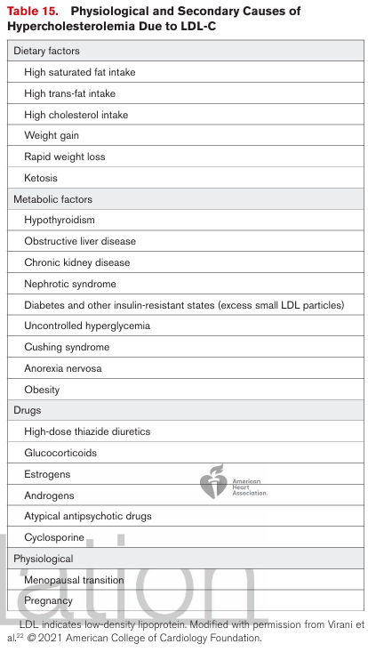
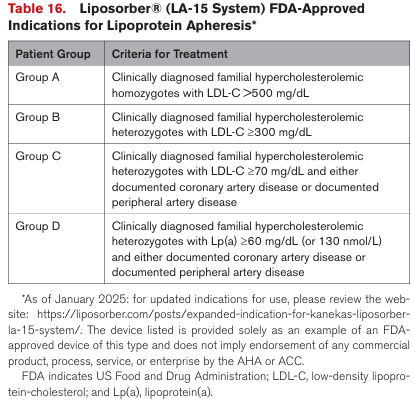
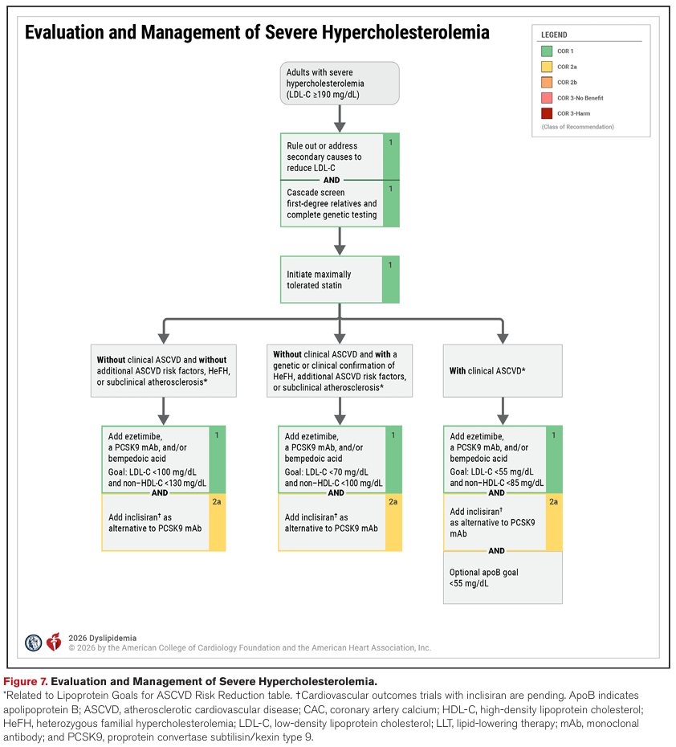
- 4.2.4.4. 臨床或基因確診 Homozygous FH 的 Severe Hypercholesterolemia
| COR | LOE | 建議 |
|---|---|---|
| 1 | B-NR | 在臨床和/或基因確診為 homozygous familial hypercholesterolemia (HoFH) 的成人中，建議會診 lipid specialist，以考慮使用 advanced LDL-C–lowering 藥物治療和/或 lipoprotein apheresis 來降低 LDL-C 。 |
| 1 | B-R | 在臨床或基因確診為 HoFH 的成人中，建議使用 maximally tolerated statin therapy 以降低 ASCVD risk 。 |
| 2a | B-R | 在臨床或基因確診為 HoFH 且目前正使用 maximally tolerated statin therapy 的成人中，加入 ezetimibe、PCSK9 mAb 和/或 bempedoic acid 來降低 LDL-C 是合理的 。 |
| 2b | B-R | 在臨床或基因確診為 HoFH，目前正使用 maximally tolerated statin therapy、ezetimibe 及 PCSK9 mAb 且 LDL-C ≥100 mg/dL (2.6 mmol/L) 的成人中，加入 evinacumab 來降低 LDL-C 可能是合理的 。 |
| 2b | C-LD | 在臨床或基因確診為 HoFH，目前正使用 maximally tolerated statin therapy、ezetimibe 及 PCSK9 mAb 且 LDL-C ≥100 mg/dL (2.6 mmol/L) 的成人中，加入 lomitapide 並定期監測 hepatic safety 來降低 LDL-C 可能是合理的 。 |
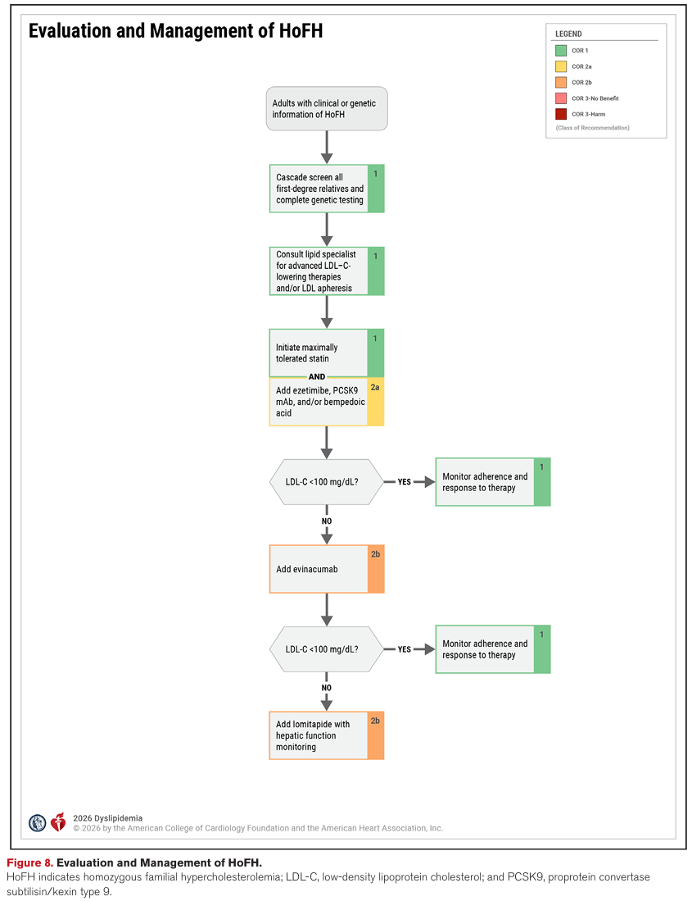
- 4.2.5. Diabetes in Adults Without Established ASCVD
| COR | LOE | 建議 |
|---|---|---|
| 1 | A | 在年齡 40 至 75 歲、患有 diabetes 且無 clinical ASCVD 的成人中，有指徵使用 moderate-intensity statin therapy，以達到 ≥30% 至 49% 的 LDL-C 降幅以及 LDL-C <100 mg/dL (2.6 mmol/L) 與 non–HDL-C <130 mg/dL (3.4 mmol/L) 的目標，從而降低 ASCVD risk 。 |
| 1 | B-R | 在患有 diabetes 且有 statin-attributed side effects 的成人中，建議啟動 ezetimibe 和/或 bempedoic acid 或是 PCSK9 mAb，以降低 LDL-C 與 ASCVD risk 。 |
| 2a | B-R | 在年齡 40 至 75 歲、患有 diabetes 且有 multiple ASCVD risk factors 的成人中，處方 high-intensity statin therapy 以達到 ≥50% 的 LDL-C 降幅以及 LDL-C <70 mg/dL (1.8 mmol/L) 與 non–HDL-C <100 mg/dL (2.6 mmol/L) 的目標以降低 ASCVD risk，是合理的 。 |
| 2b | B-R | 在患有 diabetes 且無 ASCVD，但有額外 ASCVD risk factor(s)、正在服用 statin，且 LDL-C <100 mg/dL (2.6 mmol/L) 伴隨 elevated fasting TG (150–499 mg/dL [1.7–5.6 mmol/L]) 的成人中，可考慮加入 IPE 來降低 ASCVD risk 。 |
| 2b | C-LD | 在患有 diabetes 且依 PREVENT-ASCVD equations 估算 10-y ASCVD risk ≥10% 的成人中，在 maximally tolerated statin therapy 之外加入 ezetimibe 或 PCSK9 mAb，以達到 LDL-C <70 mg/dL (1.8 mmol/L) 與 non–HDL-C <100 mg/dL (2.6 mmol/L) 的目標並降低 ASCVD risk，可能是合理的 。 |
| 2b | C-LD | 在年齡 >75 歲、預期壽命至少達 2.5 年的 diabetes 成人中，在臨床醫師與患者進行潛在益處與風險的討論後，啟動 moderate-intensity statin therapy 以降低 ASCVD risk 可能是合理的 。 |
| 2b | C-LD | 在年齡 20 至 39 歲的成人，若罹患長期的 diabetes（type 2 diabetes ≥10 年，type 1 diabetes ≥20 年）、albuminuria（≥30 μg albumin/mg creatinine）、estimated glomerular filtration rate (eGFR) <60 mL/min/1.73 m2、retinopathy、neuropathy 或 ankle-brachial index <0.9，啟動 moderate-intensity statin therapy 以降低 ASCVD risk 可能是合理的 。 |
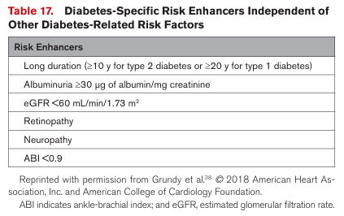
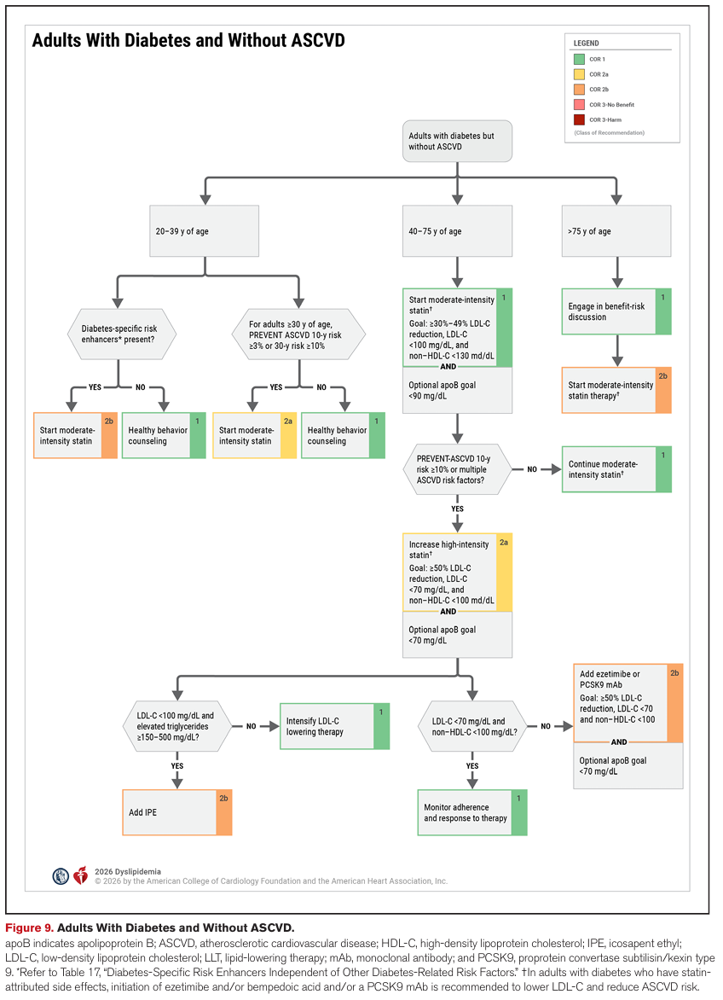
- 4.2.6. Secondary ASCVD Prevention
| COR | LOE | 建議 |
|---|---|---|
| 1 | A | 在患有 clinical ASCVD 但並非處於 very high risk 的成人中，應啟動 high-intensity statin therapy，以達到 ≥50% 的 LDL-C 降幅以及 LDL-C <70 mg/dL (1.8 mmol/L) 與 non–HDL-C <100 mg/dL 的目標，以降低復發 ASCVD 事件的風險 。 |
| 2a | B-R | 在患有 clinical ASCVD 且並非處於 very high risk 並接受 maximally tolerated statin therapy 的成人中，加入 ezetimibe、PCSK9 mAb 或 bempedoic acid 達到 LDL-C <70 mg/dL (1.8 mmol/L) 與 non–HDL-C <100 mg/dL 的目標並降低 ASCVD 事件風險是合理的 。 |
| 2a | B-R | 在患有 clinical ASCVD 且並非處於 very high risk 並接受 maximally tolerated statin therapy 的成人中，加入 ezetimibe、PCSK9 mAb 或 bempedoic acid 達到 LDL-C <55 mg/dL (1.4 mmol/L) 與 non–HDL-C <85 mg/dL (2.2 mmol/L) 的目標並降低 ASCVD 事件風險是合理的 。 |
| 1 | A | 在患有 clinical ASCVD 且處於 very high risk 的成人中，應啟動 high-intensity statin therapy 達到 ≥50% 的 LDL-C 降幅以及 LDL-C <55 mg/dL (1.4 mmol/L) 與 non–HDL-C <85 mg/dL (2.2 mmol/L) 的目標，以降低 ASCVD 事件的風險 。 |
| 1 | A | 在患有 clinical ASCVD 且處於 very high risk 並接受 maximally tolerated statin therapy 的成人中，應加入 ezetimibe 和/或 PCSK9 mAb 達到 LDL-C <55 mg/dL (1.4 mmol/L) 與 non–HDL-C <85 mg/dL (2.2 mmol/L) 的目標，以降低 ASCVD 事件風險 。 |
| 2a | B-R | 在患有 clinical ASCVD 且處於 very high risk 並接受 maximally tolerated statin therapy 的成人中，加入 bempedoic acid（含或不含 ezetimibe 和/或 PCSK9 mAb）達到 LDL-C <55 mg/dL (1.4 mmol/L) 與 non–HDL-C <85 mg/dL (2.2 mmol/L) 的目標並降低 ASCVD 事件風險是合理的 。 |
| 2a | B-R | 在患有 clinical ASCVD 且處於 very high risk，正在接受含或不含 ezetimibe 的 maximally tolerated statin therapy 的成人中，對於無法耐受或無法獲得 evolocumab 或 alirocumab，或強烈偏好較低給藥頻率者，加入 inclisiran 達到 LDL-C <55 mg/dL (1.4 mmol/L) 與 non–HDL-C <85 mg/dL (2.2 mmol/L) 的目標是合理的 。 |
| 2b | B-R | 在因 ischemic heart disease 導致 HFrEF 的成人中，若預期壽命合理（3–5 年）且未因為 ASCVD 而服用 statin，考慮啟動 moderate-intensity statin therapy 以減少 ASCVD 事件的發生可能是合理的 。 |
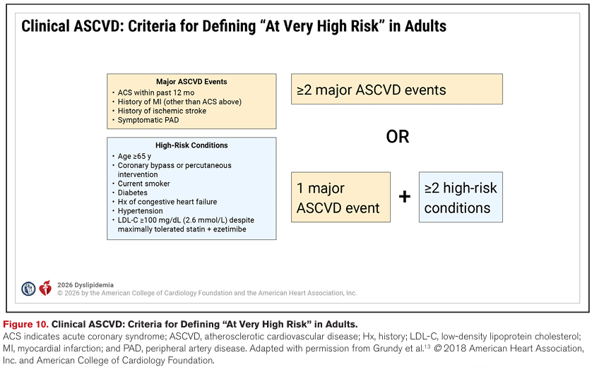
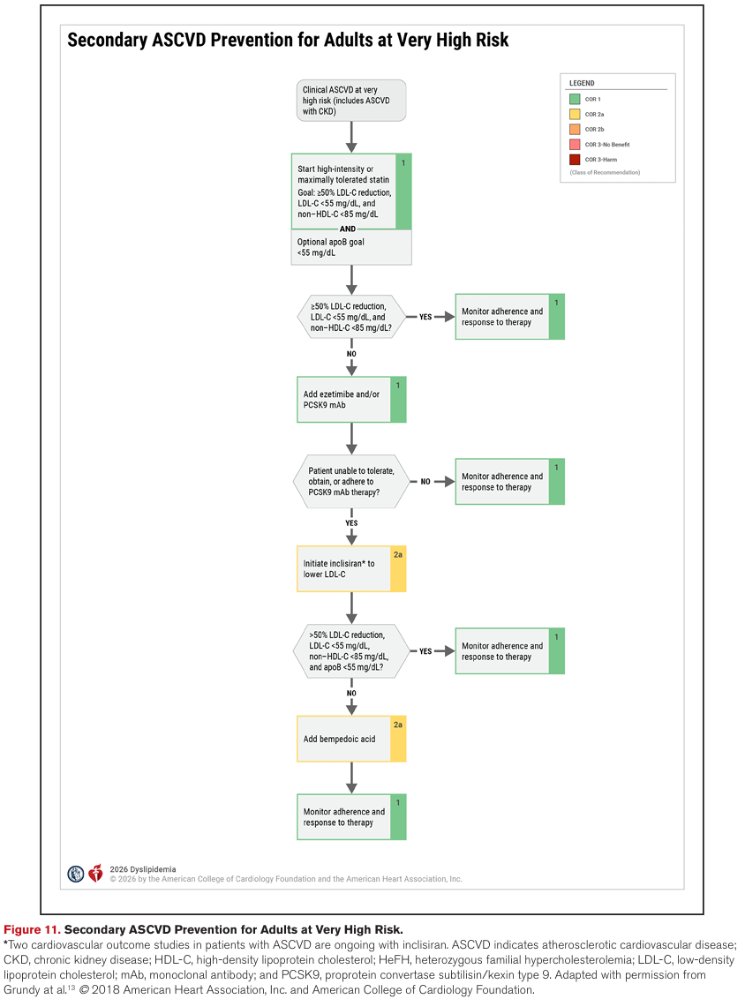
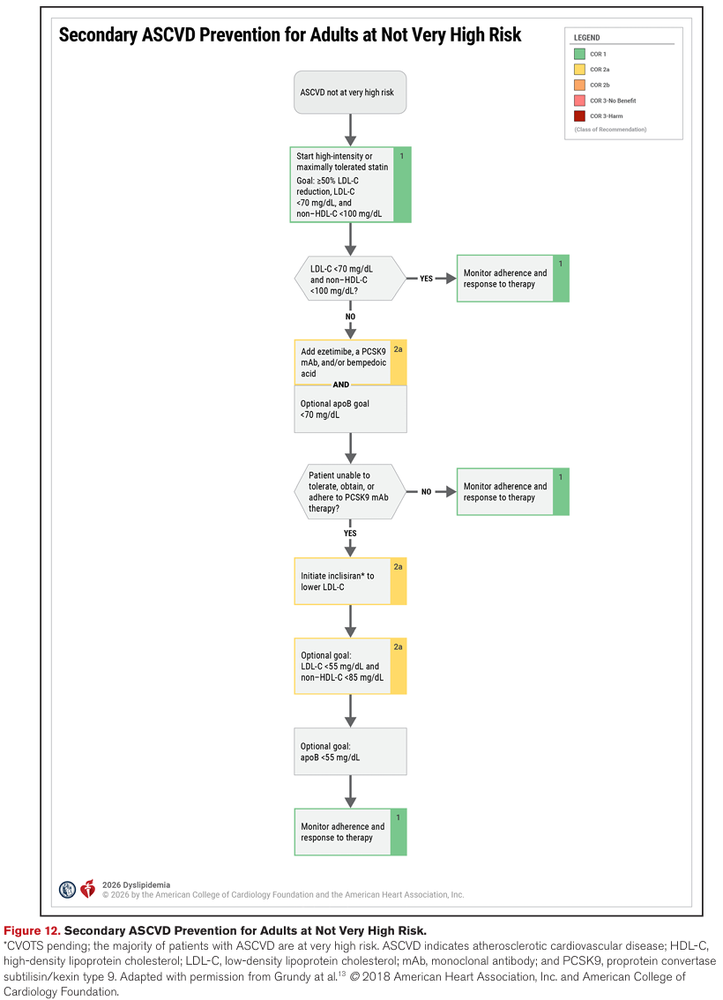
- 4.2.7. Management of Adults With Subclinical Coronary Atherosclerosis (Men ≥40 or Women ≥45 Years)
| COR | LOE | 建議 |
|---|---|---|
| 1 | B-NR | 在 CAC score ≥1000 AU 的成人中，建議使用 LDL-C–lowering therapies（優先考慮 statin therapy 作為第一線）達到 ≥50% 的 LDL-C 降幅以及 LDL-C <55 mg/dL (1.4 mmol/L) 與 non–HDL-C <85 mg/dL (2.2 mmol/L) 的目標 。 |
| 1 | B-R | 在 CAC score ≥300 至 999 AU 的成人中，建議使用 LDL-C– lowering therapies（優先考慮 statin therapy 作為第一線）達到 ≥50% 的 LDL-C 降幅以及 LDL-C <70 mg/dL (1.8 mmol/L) 與 non–HDL-C <100 mg/dL (2.6 mmol/L) 的目標 。 |
| 1 | B-R | 在 CAC score ≥100 至 299 AU 或 ≥ 第 75 標準百分位數 (75th standardized percentile) 的成人中，建議使用 LLT（優先考慮 statin therapy 作為第一線療法）達到 ≥50% 的 LDL-C 降幅以及 LDL-C <70 mg/dL (1.8 mmol/L) 與 non–HDL-C <100 mg/dL (2.6 mmol/L) 的目標 。 |
| 2a | B-R | 在 CAC score 為 1 至 99 AU 且 < 第 75 標準百分位數，或在 noncardiac CT scan 中偶然發現 mild CAC 的成人中，使用 moderate-intensity statin therapy 達到 ≥30% 至 49% 的 LDL-C 降幅以及 LDL-C <100 mg/dL (2.6 mmol/L) 與 non–HDL-C <130 mg/dL (3.4 mmol/L) 的目標是合理的 。 |
| 2a | B-NR | 在 CAC score ≥300 至 999 AU 的成人中，透過增加 statin therapy 的強度來強化治療是合理的，或者必要時加入 ezetimibe、PCSK9 mAb 或 bempedoic acid，以達到 LDL-C <55 mg/dL (1.4 mmol/L) 與 non–HDL-C <85 mg/dL (2.2 mmol/L) 的目標 。 |
| 2a | B-NR | 在無過往 ASCVD 且於 noncardiac CT scans 中偶然發現中度至重度 coronary atherosclerosis 的成人中，啟動 high-intensity statin therapy 達到至少 ≥50% 的 LDL-C 降幅與 LDL-C <70 mg/dL (1.8 mmol/L) 及 non–HDL-C <100 mg/dL (2.6 mmol/L) 的目標是合理的；如果偶然發現 mild CAC，則使用 moderate-intensity statin therapy 達到 ≥30% 至 49% 的 LDL-C 降幅與 LDL-C <100 mg/dL (2.6 mmol/L) 及 non–HDL-C <130 mg/dL 的目標是合理的 。 |
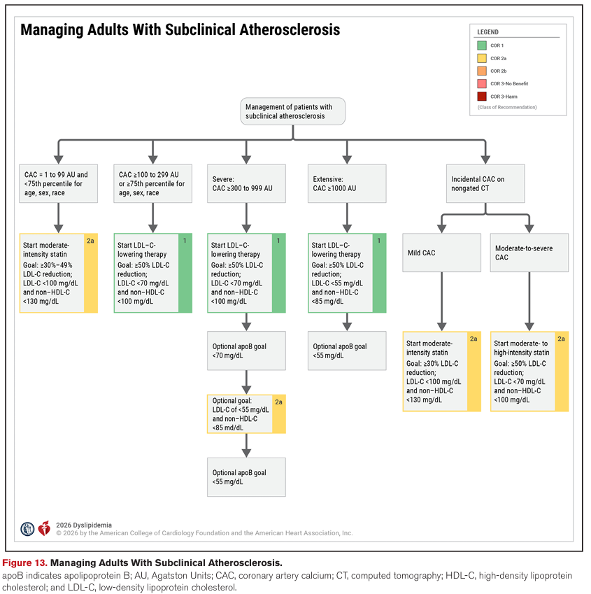
- 4.2.8. Considerations in Patient Management
- 4.2.8.1. 兒童與青少年 (Children and Adolescents)
| COR | LOE | 建議 |
|---|---|---|
| 1 | B-R | 在有 lipid abnormalities 的兒童與青少年中，建議進行 lifestyle management 以改善 LDL-C、TG 與 non–HDL-C 。 |
| 1 | B-R | 在年齡 ≥8 歲、LDL-C level 持續 ≥160 mg/dL (4.1 mmol/L) 且表現符合 FH 的兒童與青少年中，若經過 3 至 6 個月的 lifestyle management 仍未能充分反應，建議在必要時啟動 statin 與其他 LLT 以降低 LDL-C 。 |
| 2a | B-NR | 在臨床表現符合 FH 的兒童與青少年中，針對 FH 致病性/可能致病性罕見變異進行 panel-based genetic testing，對於指引診斷、cascade testing 及治療是有效的 。 |
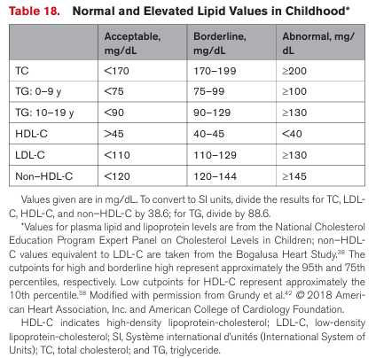
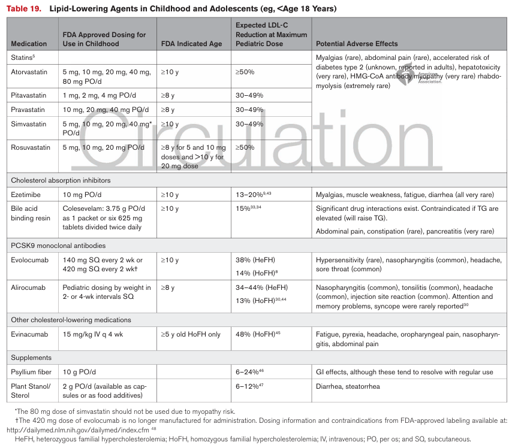
- 4.2.8.2. >18 至 39 歲年輕成人 (Young Adults)
| COR | LOE | 建議 |
|---|---|---|
| 1 | B-NR | 在年輕成人 (>18–39 歲) 中，應提供 dietary、physical activity 及 weight optimization 的建議，以減少累積的致粥狀硬化性 lipid 暴露及終生 ASCVD risk 。 |
- 4.2.8.3. 高齡成人 (Older Adults)
| COR | LOE | 建議 |
|---|---|---|
| 1 | C-EO | 在高齡成人中，benefit-risk discussion 應包含患者的優先事項、功能狀態、multimorbidity、frailty、polypharmacy 及預期壽命，且在考慮停用 LLT 的決定時不應單憑實際年齡 。 |
| 2b | B-NR | 在年齡 >75 歲且預期壽命至少達 2.5 年的成人中，在臨床醫師與患者討論潛在益處與風險後，啟動 moderate-intensity statin therapy 以降低 ASCVD risk 可能是合理的 。 |
| 2b | B-R | 在預期壽命 <1 年的患者中，停用 LDL-lowering therapy 以避免不必要的藥物使用或藥物不良反應可能是合理的 。 |
| 2b | B-NR | 在年齡 >75 歲且預期壽命至少達 2.5 年，且對 LLT 決策不確定的成人中，測量 CAC 以重新分類那些只有 minimal (1–10) 或沒有 CAC 的患者來避免使用 LLT 可能是合理的 。 |
- 4.2.8.4. 計畫懷孕、懷孕期間或哺乳期間的 Dyslipidemia 管理
| COR | LOE | 建議 |
|---|---|---|
| 1 | C-LD | 患有 hypercholesterolemia 且非處於 high ASCVD risk，並計畫懷孕的育齡期個體，應在嘗試懷孕前 1 至 2 個月，或在發現懷孕時立即停止 statin therapy，以避免對胎兒產生不確定的風險 。 |
| 2a | B-NR | 在患有 HoFH 的懷孕或哺乳個體中，接受 lipoprotein apheresis 以降低 LDL-C 及降低 ASCVD risk 是合理的 。 |
| 2a | B-NR | 在患有 severe fasting hypertriglyceridemia (TG ≥500 mg/dL [5.7 mmol/L]) 的懷孕個體中，使用 fibrates（在第一孕期之後）或高劑量 omega-3 ethyl esters 作為 lifestyle management 的輔助來降低 TG levels 及 pancreatitis 風險，是合理的 。 |
| 2a | C-EO | 在患有 hypercholesterolemia 但無 hypertriglyceridemia 的懷孕或哺乳個體中，使用 bile acid sequestrants 來降低 LDL-C 是合理的 。 |
| 2b | C-LD | 在患有 FH 或有 clinical ASCVD 病史的懷孕個體中，經過個人化的 benefit-risk discussion 後，繼續 statin therapy 以降低 LDL-C 及 ASCVD risk 可能是合理的 。 |
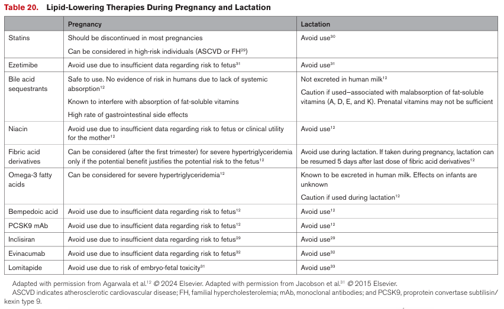
- 4.2.8.5. Considerations Based on Ancestry
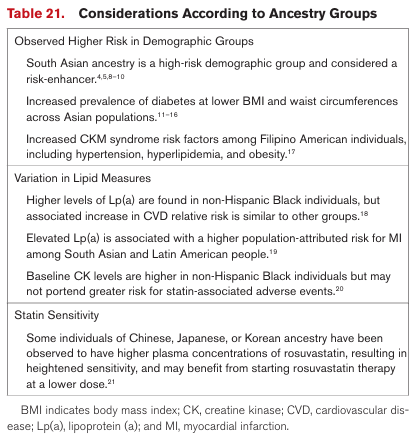
- 4.2.8.6. 患有 Heart Failure 的成人
| COR | LOE | 建議 |
|---|---|---|
| 3: No Benefit | A | 在患有 HFrEF 且無 clinical ASCVD 或其他 LLT 適應症的成人中，不建議啟動 LLT 以減少臨床事件或死亡率 。 |
-
4.2.8.7. 有慢性發炎的成年人
- 無建議內容
-
4.2.8.8. 患有 CKD—Stage 3 或以上的成人
| COR | LOE | 建議 |
|---|---|---|
| 1 | B-R | 在 40 至 75 歲患有 CKD stage 3 或以上且 LDL-C 為 70 至 189 mg/dL (1.8–4.9 mmol/L) 的成人中，建議使用 moderate-intensity statin therapy 或 moderate-intensity statin 結合 ezetimibe 以降低 ASCVD risk 。 |
| 1 | B-R | 在患有 CKD stage 3 或以上及 clinical ASCVD 的成人中，建議使用 high-intensity statin therapy（含或不含 ezetimibe 和/或 PCSK9 mAb）作為 LLT，以達到 ≥50% 的 LDL-C 降幅與 LDL-C <55 mg/dL (1.4 mmol/L) 及 non–HDL-C <85 mg/dL (2.2 mmol/L) 的目標以降低 ASCVD risk 。 |
| 2b | C-LD | 在需要維持性 hemodialysis 的 CKD 成人中，繼續 statin therapy 以降低 ASCVD 事件風險可能是合理的。治療決策應考量預期存活率、其他合併症及 ASCVD 的嚴重程度進行個人化調整 。 |
- 4.2.8.9. HIV 感染者 (Persons Living With HIV)
| COR | LOE | 建議 |
|---|---|---|
| 1 | B-R | 在 40 至 75 歲正接受穩定 combination antiretroviral therapy 的 HIV 感染者中，建議使用 statin therapy 以降低首次 ASCVD 事件風險並減少 coronary atherosclerosis 的惡化率 。 |
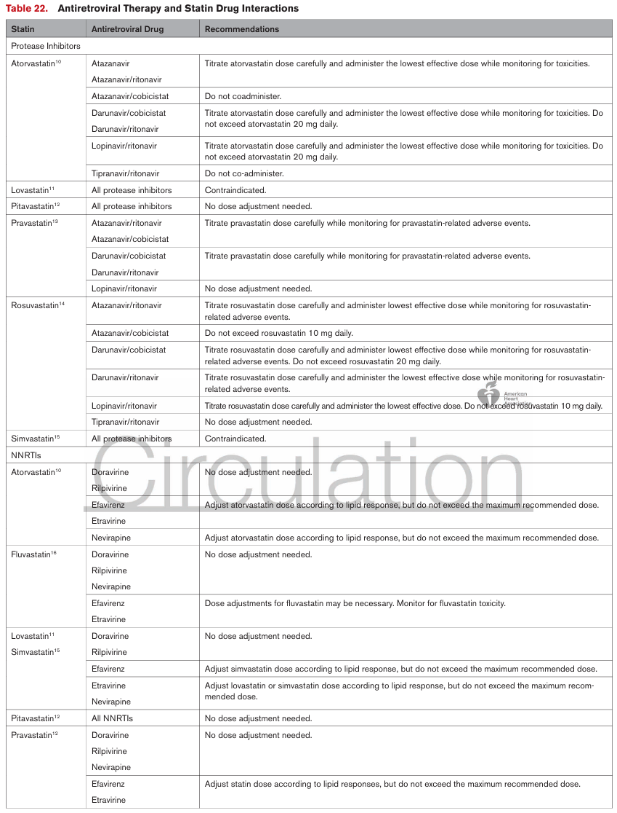
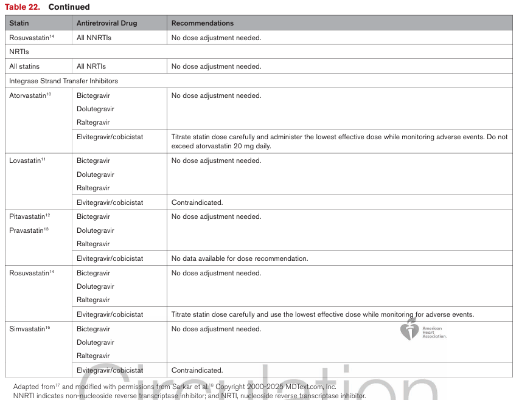
- 4.2.8.10. 患有 Cancer 或 Cancer 病史的成人
| COR | LOE | 建議 |
|---|---|---|
| 1 | B-NR | 預期壽命至少達 2 年且符合 LLT 條件的成人 cancer survivors，應接受與無 cancer 病史者相似的治療，以降低 ASCVD 事件風險 。 |
| 1 | B-NR | 在正在接受 statin therapy 的 active cancer 成人中，應繼續治療以降低 ASCVD risk，除非對特定的 drug interaction 有疑慮或預期壽命 <1 年 。 |
| 2b | B-R | 在 active cancer 的成人中，可能考慮啟動 statin therapy 來預防 anthracycline-induced cardiotoxicity 。 |
- 4.2.9. Management of Hypertriglyceridemia
| COR | LOE | 建議 |
|---|---|---|
| 1 | B-NR | 在 TG levels 持續升高 ≥150 mg/dL (1.7 mmol/L) 的成人中，在評估和處理 secondary causes 之後，建議將 lifestyle management 作為降低 TG levels 的第一線方法 。 |
| 1 | B-R | 在具有 clinical ASCVD、正在使用 maximally tolerated statin 且 LDL-C ≥55 mg/dL (1.4 mmol/L) 及 non–HDL-C ≥85 mg/dL，伴隨 TG levels 持續升高達 150 至 999 mg/dL (1.7–11.3 mmol/L) 的成人中，建議強化 LDL-C–lowering therapy 以降低 ASCVD risk 。 |
| 1 | B-R | 在患有 FCS 且 fasting TG ≥1000 mg/dL (11.3 mmol/L) 的成人中，建議將 olezarsen 作為 diet 的輔助療法來降低 TG levels 並減少 pancreatitis 的風險 。 |
| 2b | B-R | 在年齡 ≥50 歲，有 clinical ASCVD 或 diabetes 並伴隨 ≥1 個 ASCVD risk factors，TG levels 持續升高達 150 至 499 mg/dL (1.7–5.6 mmol/L)，且正在使用 maximally tolerated statin 使 LDL-C <100 mg/dL (2.6 mmol/L) 的成人中，加入 IPE 來降低 ASCVD risk 可能是合理的 。 |
| 1 | A | 在年齡 40 至 75 歲無 ASCVD 或 diabetes 病史，且 TG levels 持續升高達 ≥150 至 499 mg/dL (≥1.7–5.6 mmol/L) 的成人中，建議透過 PREVENT-ASCVD equations 估算 10-y ASCVD risk，以指引針對進一步最佳化 diet 與 lifestyle management，以及潛在啟動 statin therapy 以降低 ASCVD risk 的 benefit-risk discussion 。 |
| 2a | B-NR | 在患有 severe hypertriglyceridemia (TG levels 持續升高 ≥500–999 mg/dL [5.7 mmol/L])，特別是儘管經過 dietary intervention 其 TG levels 仍 ≥1000 mg/dL (11.3 mmol/L) 的成人中，使用 fibric acid derivatives 或 prescription omega-3 fatty acids 來降低 TG levels 和減少 pancreatitis 風險是合理的 。 |
| 2a | B-NR | 在患有 hypertriglyceridemia (TG ≥150 mg/dL) 的成人中，偏好測量 non–HDL-C 或 apoB 而非 LDL-C 來指引臨床決策 。 |
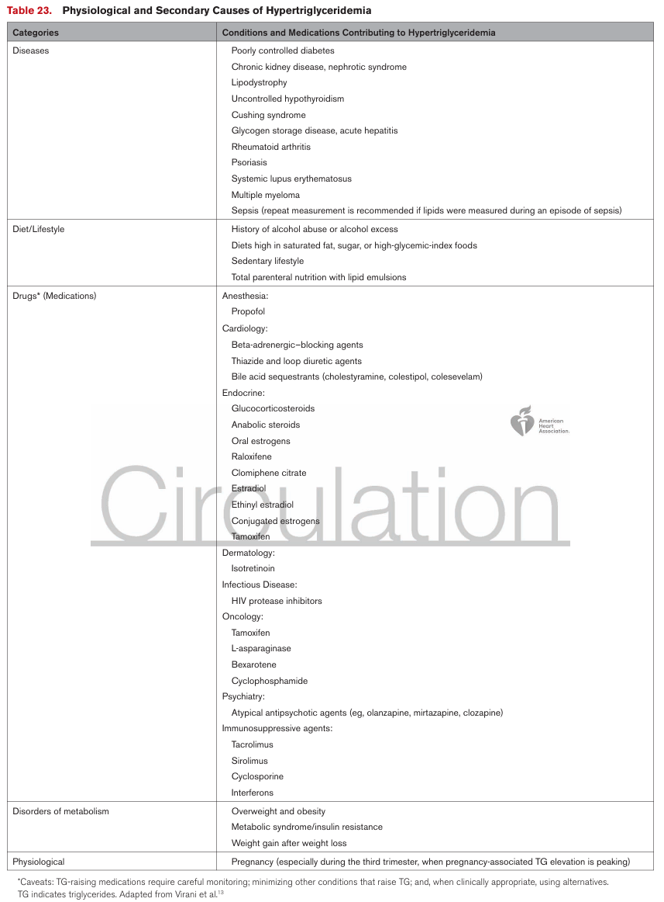
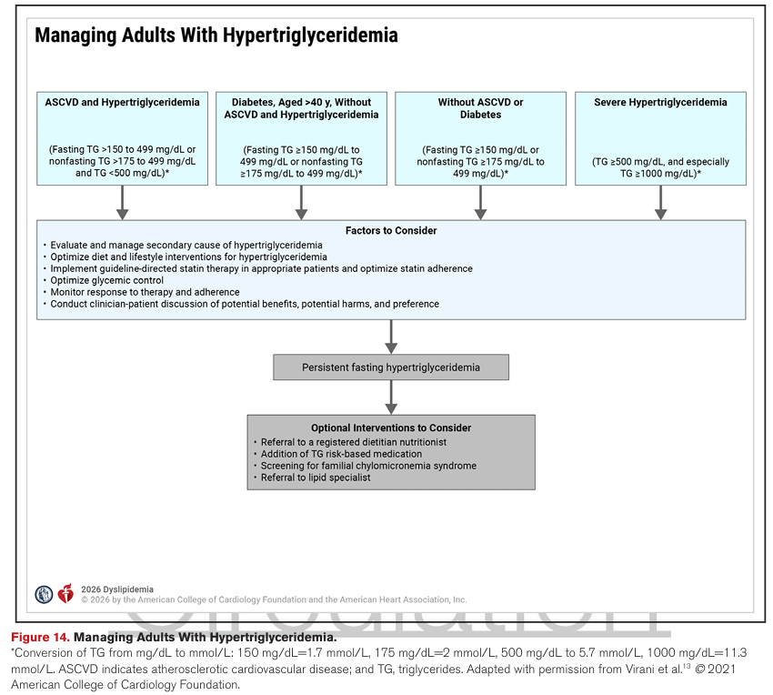
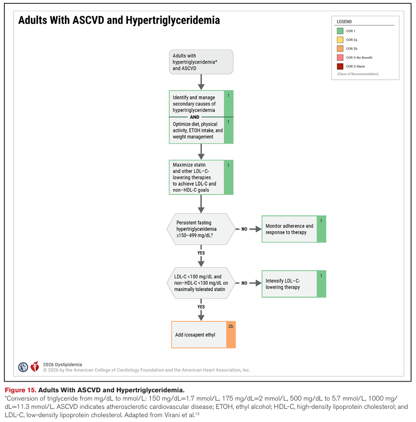
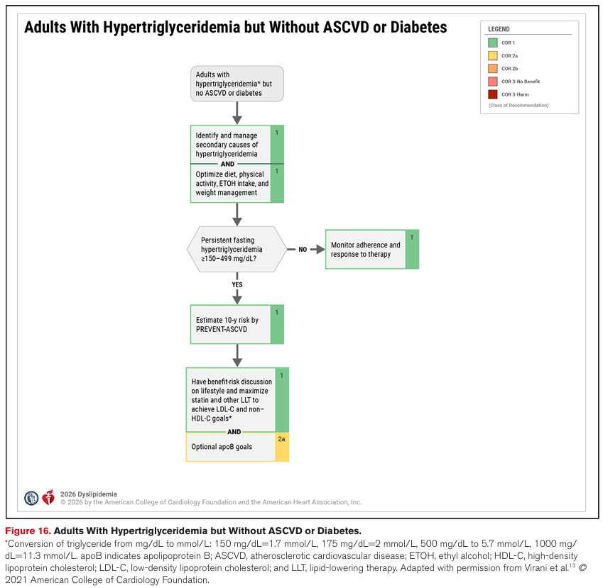
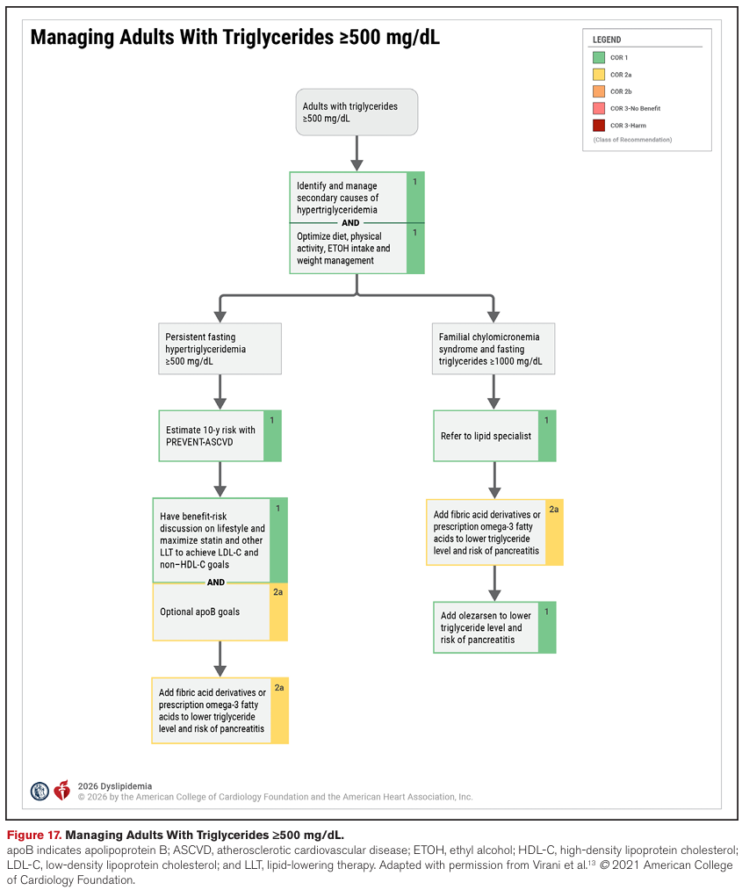
- 4.2.10. Approach to Patients With Elevated Lp(a)
| COR | LOE | 建議 |
|---|---|---|
| 1 | B-NR | 在所有 elevated Lp(a) (≥125 nmol/L 或 ≥50 mg/dL) 的個體中，建議最佳化早期控制可改變的心血管 risk factors，以降低 ASCVD risk 。 |
| 1 | B-R | 在具有 clinical ASCVD 及 elevated Lp(a)，且正在使用 maximally tolerated statin therapy 但未達到 LDL-C 及 non–HDL-C 治療目標的個體中，建議加入具備已證實心血管益處的 PCSK9 mAb，以達到治療目標並降低 ASCVD risk 。 |
- 4.2.11. Management of Statin-Attributed Muscle Symptoms
| COR | LOE | 建議 |
|---|---|---|
| 1 | C-LD | 在有 statin-attributed muscle symptoms 的成人中，評估應包含針對 secondary causes 的評估，對於有嚴重 myalgias 或無力者，建議進行肌肉力量的客觀臨床測量與 CK 的測量以評估病況的嚴重程度 。 |
| 1 | B-R | 在有 statin-attributed muscle symptoms 的成人中，臨床醫師與患者的討論應承認患者對副作用的擔憂，告知患者停用 statin 會導致 ASCVD risk 升高，並提供替代的治療選項以降低 ASCVD risk 。 |
| 1 | B-R | 在有 clinical ASCVD 且在使用建議強度的 statin therapy 時出現 statin-attributed muscle symptoms (已排除 secondary causes)，並且無法達到建議治療目標的成人中，建議使用降低的 statin dose (如果可耐受) 並加入 bempedoic acid、ezetimibe 或 PCSK9 mAb (單獨或合併使用)，以降低 LDL-C 及 ASCVD risk 。 |
| 1 | B-R | 在無 clinical ASCVD 病史，在使用建議強度的 statin therapy 時出現 statin-attributed muscle symptoms (已排除 secondary causes)，且基於 PREVENT-ASCVD equations 為 high ASCVD risk ≥10% 或 CAC score ≥300 AU，或者 >65 歲的女性或 >60 歲的男性 diabetes 患者中，有指徵加入 bempedoic acid 和/或 ezetimibe 將 LDL-C 降至 <70 mg/dL (1.8 mmol/L) 且 non–HDL-C <100 mg/dL (2.6 mmol/L) 並降低 ASCVD risk 。 |
| 1 | B-R | 在無 clinical ASCVD 病史，在使用建議強度的 statin therapy 時出現 statin-attributed muscle symptoms (已排除 secondary causes)，且基於 PREVENT-ASCVD equations 為 high ASCVD risk ≥10% 或 CAC score ≥300 AU 或是 diabetes 且無法達到建議治療目標的成人中，建議加入 PCSK9 mAb 來降低 LDL-C 。 |
| 2a | B-NR | 在有 clinical ASCVD 且出現 statin-attributed muscle symptoms (已排除 secondary causes) ，且在使用包含或不包含 ezetimibe 的 bempedoic acid 仍無法達到建議治療目標的成人中，對於無法耐受或無法取得 evolocumab 或 alirocumab 或強烈偏好較低給藥頻率者，加入 inclisiran 達到 LDL-C <55 mg/dL (1.4 mmol/L) 與 non–HDL-C <85 mg/dL (2.2 mmol/L) 的目標是合理的 。 |
| 2b | B-R | 在無 clinical ASCVD 病史，在使用建議強度的 statin therapy 時出現 statin-attributed muscle symptoms (已排除 secondary causes)，且基於 PREVENT-ASCVD equations 為 borderline 至 intermediate ASCVD risk (3% 到 <10%) 的成人中，若決定以 ezetimibe 和/或 bempedoic acid 治療仍不確定，進行 coronary calcium scoring 輔助 ASCVD risk stratification 以提供關於附加療法來降低 ASCVD risk 的決策資訊，可能是合理的 。 |
| 2b | B-NR | 在無 clinical ASCVD 病史，在使用建議強度的 statin therapy 時出現 statin-attributed muscle symptoms (已排除 secondary causes)，且基於 PREVENT-ASCVD equations 為 borderline 或 intermediate ASCVD risk (3% 到 <10%) 的成人中，加入 ezetimibe 和/或 bempedoic acid 將 LDL-C 降至 <100 mg/dL (2.6 mmol/L) 且 non–HDL-C 降至 <130 mg/dL (3.4 mmol/L) 並降低 ASCVD risk 可能是合理的 。 |
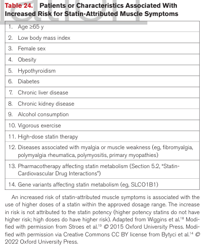
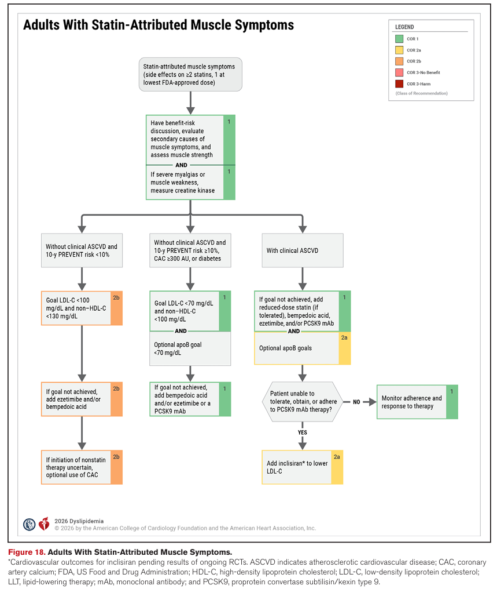
5.Complications of Management
5.1. Medication Safety and Therapy-Associated Side Effects
| COR | LOE | 建議 |
|---|---|---|
| 1 | A | 在患有 dyslipidemia 的成人中，建議在啟動 lipid-lowering medication 前進行個人化的臨床醫師與患者討論，回顧藥物治療的益處與風險，以促進患者參與和 medication adherence 。 |
| 1 | A | 在有 elevated diabetes risk 或 new-onset diabetes 的成人中，建議繼續 statin therapy，並額外強調依從性、淨臨床益處與 lifestyle management 。 |
| 2a | B-R | 在處於 elevated ASCVD risk 且患有 chronic, stable liver disease（包含 metabolic dysfunction-associated steatotic liver disease）的成人中，使用 statin therapy 來降低 ASCVD risk 是合理的 。 |
| 3: No Benefit | B-R | 在接受 statin therapy 的成人中，不建議常規使用 coenzyme Q10 來治療或預防 statin-attributed muscle symptoms 。 |
| 3: No Benefit | A | 在接受 statin therapy 且無嚴重 statin-attributed muscle symptoms 的成人中，常規測量 CK 對於評估安全性沒有幫助 。 |
| 3: No Benefit | B-NR | 在接受 statin therapy 且無暗示 hepatotoxicity 的嚴重症狀（即 jaundice、pruritus、fatigue、nausea and vomiting、abdominal pain）的成人中，常規測量 hepatic function 對於評估安全性沒有幫助 。 |
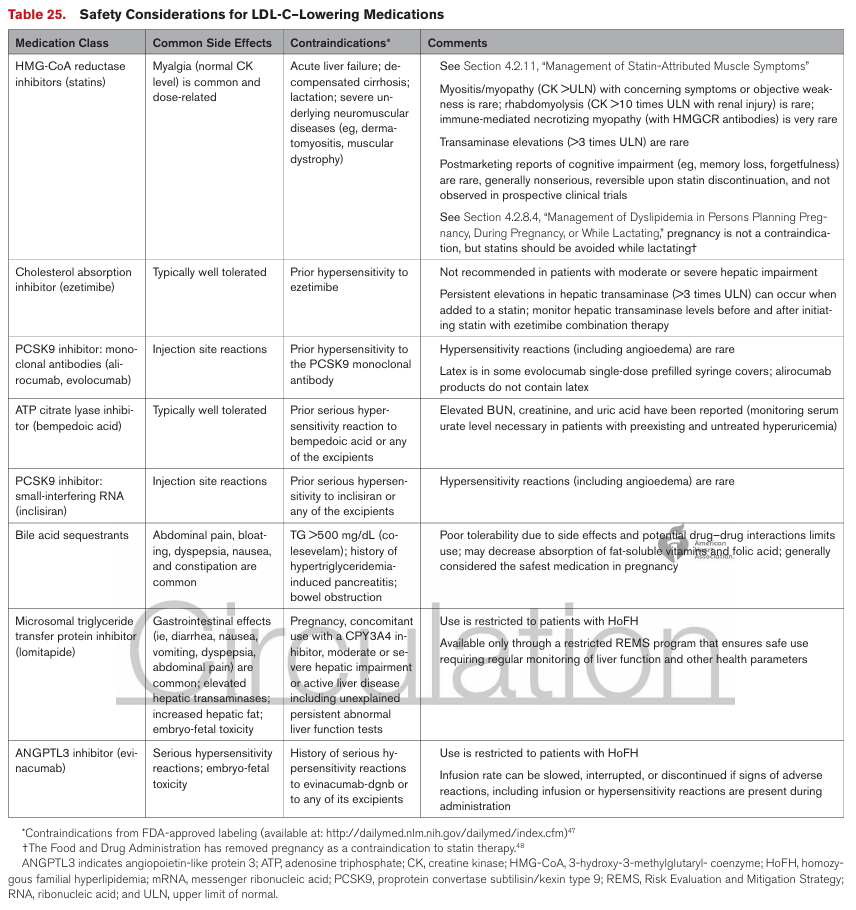
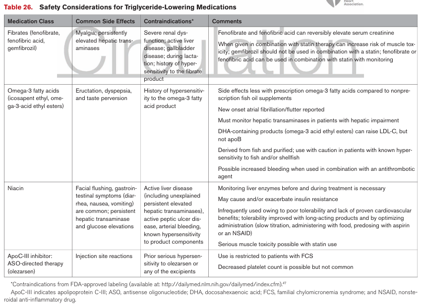
5.2. Statin-Cardiovascular Drug Interactions
| COR | LOE | 建議 |
|---|---|---|
| 1 | B-NR | 對於已決定啟動 statin therapy 的成人，建議檢閱 concomitant medications 並評估與其他 cardiovascular medications 潛在的 DDI，以最小化發生 statin-associated adverse events 的風險 。 |
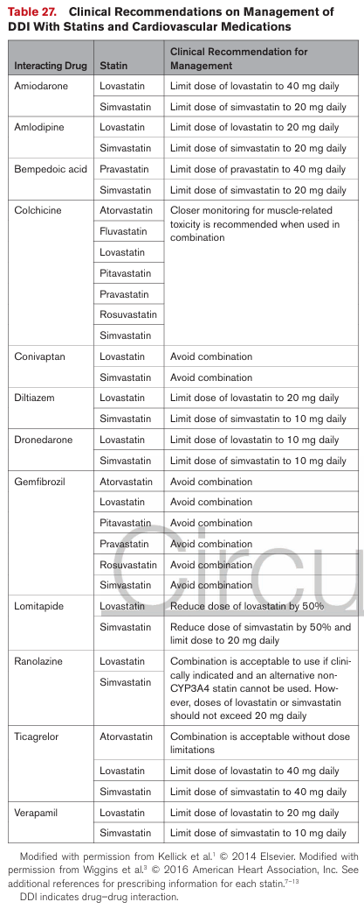
6. Evidence Gaps and Future Directions
- 無建議內容